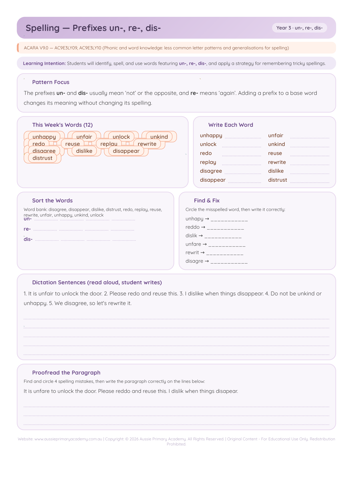

Year 3 · English · Spelling · Free Printable
Prefixes: un-, re-, dis-
Practise adding the prefixes un-, re- and dis- to base words to change meaning.
Worksheet Preview

Learning Intention
Students will add the prefixes un-, re- and dis- to base words and understand how they change meaning.
Curriculum alignment
AC9E3LY10
Australian Curriculum Version 9.0 support for this Year 3 English skill.
Teacher Notes
Discuss meaning of each prefix (not, again, opposite). Build words then use them in sentences.
Skills Practised
- Prefixes
- Morphology
- Word building
- Vocabulary
About This Worksheet
This Year 3 spelling worksheet helps students explore the prefixes un-, re- and dis-. Students practise noticing how a prefix can change or add to the meaning of a base word and use that knowledge when reading and spelling.
What Students Practise
- Identifying un-, re- and dis- at the beginning of words.
- Connecting prefixes with changes in meaning.
- Building new words from familiar base words.
- Applying prefix knowledge to spelling and vocabulary.
How to Use It
Read the base word first, then add the prefix and discuss how the meaning changes. Examples include happy → unhappy, write → rewrite and agree → disagree. Ask students to explain the meaning of the new word in their own words.
Parent Tip
Use everyday vocabulary to reinforce the pattern. When your child meets a new word beginning with un-, re- or dis-, pause and ask whether the prefix gives a clue to its meaning.
Resource Details
Year level: Year 3
Subject: English
Topic / skill: Apply knowledge of prefixes and base words to read and comprehend new multimorphemic words.
Curriculum alignment: AC9E3LY10
Curriculum version: Australian Curriculum Version 9.0
Format: Free printable worksheet